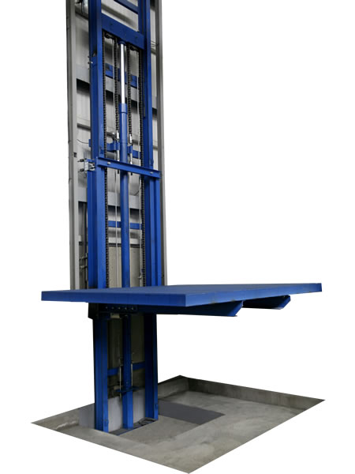

Types Ascenseurs
Ascenseur Classique
Avec machinerie locale
La cabine est mise en mouvement grâce à un câble entrainé par une poulie qui est actionnée
par un moteur.
Avantage :
- Un (1/3) consommation énergie hydraulique.
- Présence d’un contrepoids dont la charge vaut 50 % de l'ensemble cabine-câble-charge
utilisateur (réduit la charge que doit mettre en mouvement la motorisation).
Inconvénients :
Nécessite une technologie plus poussée et autrefois un cabanon en toiture, pour le
renforcement de la stabilitée
Ascenseur Gearless
Sans machinerie locale
La cabine est mise en mouvement grâce à un câble entrainé par une poulie qui est actionnée
par un moteur.
Avantage :
- Un (1/3) consommation énergie hydraulique.
- Présence d’un contrepoids dont la charge vaut 50 % de l'ensemble cabine-câble-charge
utilisateur (réduit la charge que doit mettre en mouvement la motorisation).
Inconvénients :
Nécessite une technologie plus poussée et autrefois un cabanon en toiture, pour le
renforcement de la stabilitée
Ascenseur Hydraulique
Dans ce type, la cabine est propulsée soit directement soit par une suspension mouflée, par
le piston d'un vérin alimenté par de l'huile sous pression provenant d'une centrale hydraulique.
Le remplissage du piston fait monter l'ascenseur.
A la descente, le by-pass (vanne) de la pompe permet l’évacuation de l'huile vers un
réservoir qui fonctionne en circuit fermé.
Ces ascenseurs sont plus lents et n'ont donc aucun contrepoids.
Avantage :
-Facilité de construction.
-Déplacement vertical de charges lourdes sur de courtes distances.
Inconvénients :
-Gros consommateurs d’énergie.
-Courants de démarrage élevé.
-Effort de mise en pression de l’huile par la pompe élevé car pas de contrepoids.
Monte-charge

Le monte-charge est tout simplement un appareil qui sert à monter de grosses charges de marchandises vers un étage. Il s’agit d’une cabine ou mini-ascenseur, transportant une cargaison volumineuse et effectuant un mouvement vertical.